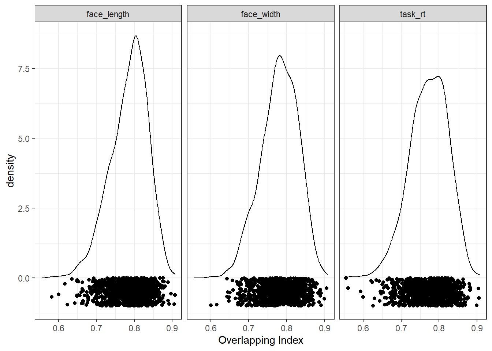
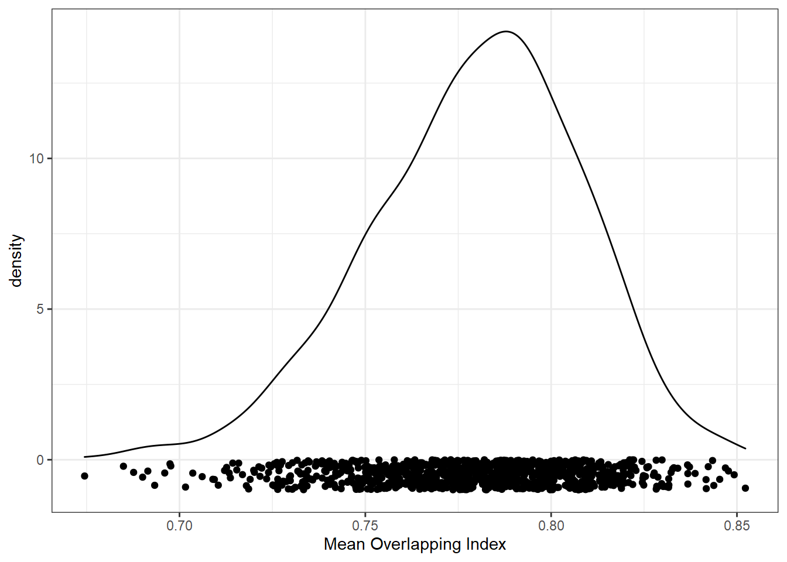
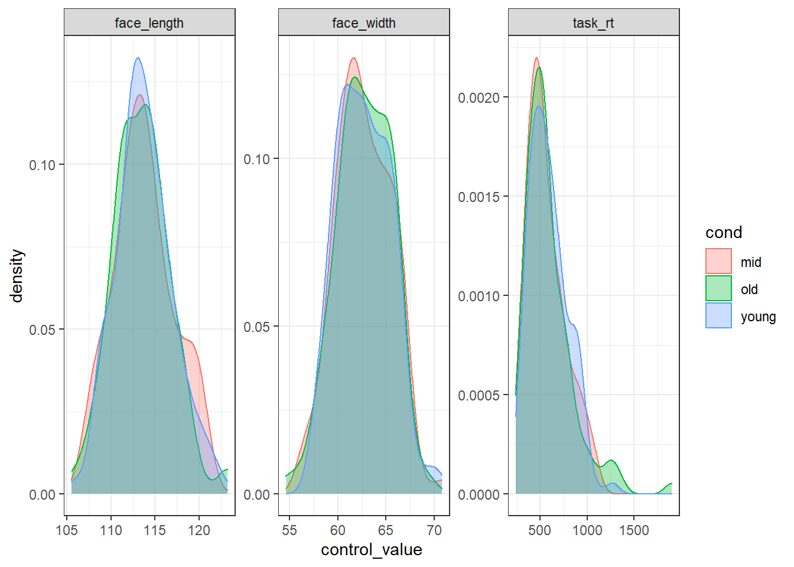
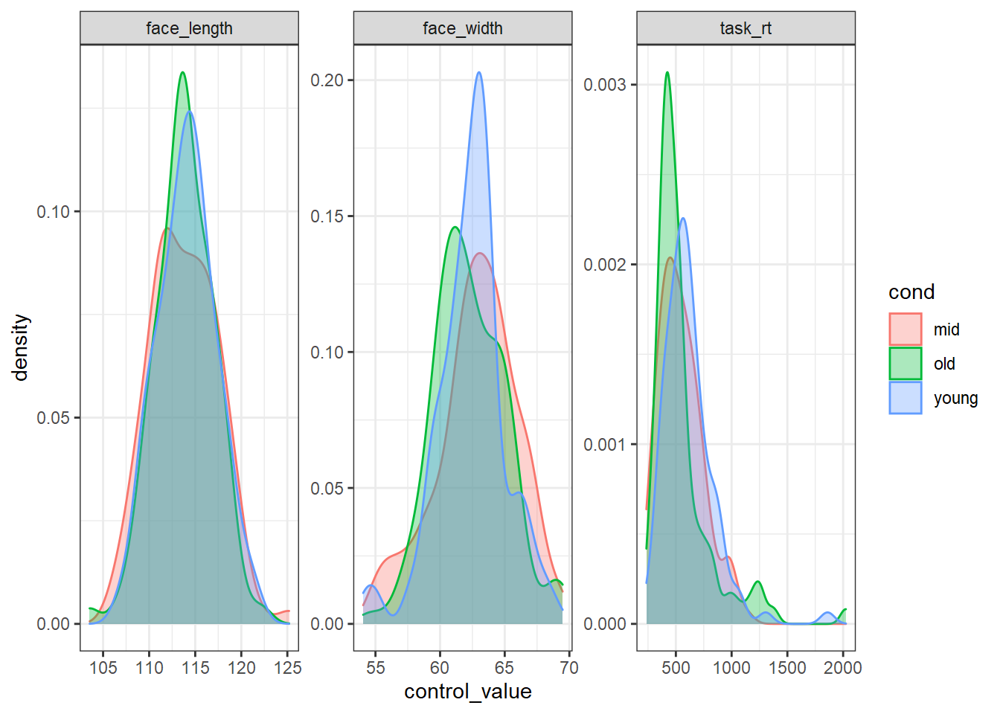

In the previous example, we matched control variables across two conditions. In this example, we’ll match control variables across three conditions. This could also be applied to an interactive design (e.g. matching four conditions in a 2x2 design). Rather than comparing young and old faces, we’ll have a design comparing young, middle-aged, and old faces. The three variables we’re controlling for are: face_width, face_length, and task_rt. We’ll match for variables using the Overlapping Index (although we could use other statistics if we wanted).
library(tidyverse)
library(overlapping) # contains function for calculating overlap indexstim_pool <- read_csv("stim_pool.csv")We’ll create a list of 100 young, 100 middle-aged, and 100 old faces - this means we will have three conditions. As mentioned, we’re matching all three conditions on face width, face length, and response time on a task (task_rt). (If we instead had an interactive design, we would just have to identify each factorial cell as a condition).
First, we define our conditions.
stim_pool <- mutate(stim_pool, cond = case_when(
age<28 ~ "young",
age>35 & age <45 ~ "mid",
age>50 ~ "old"
))This gives us more than >1000 canididates in each condition.
count(stim_pool, cond)## # A tibble: 4 x 2
## cond n
## <chr> <int>
## 1 mid 1047
## 2 old 1116
## 3 young 1202
## 4 <NA> 1635We’ll also create a vector of the labels for our conditions. We can use this for reference later, without having to type out the conditions each time.
cond_labs <- c("young", "mid", "old")As before, we’ll create a vector of a large number of random seeds so we can reproduce our stimulus sets. For speed, I’m only running 1000 iterations in this example, but I recommend running much larger numbers of iterations to improve the quality of the match.
set.seed(42) # comment this line out (put # at the start of the line) to get a different result to mine
n_iter <- 1000
seeds <- sample(1:.Machine$integer.max, n_iter)We’ll create a vector of the column names for the variables we want to control for. We’ll use this to loop over the control variables.
control_vars <- c("face_width", "face_length", "task_rt")As before, we want to simulate a large number of random samples. This time, we have multiple conditions, and multiple control variables.
To do this we use: * map_df() to iterate over the seeds, generating some rows of a dataframe each iteration. The final result is a dataframe of each control variable’s minimum overlap (between all possible paired comparisons of all conditions), for each seed. * sapply() within map_df(), to iterate over the control variables, generating a numeric vector of minimum overlap values for each control variable. I take the minimum because the three conditions mean there are three comparisons (A-B, B-C, A-C). By taking the minimum, we know that the other comparisons are at least as well matched as the given overlap index. * lapply() within sapply(), to generate a list of the a given control variable’s values in each condition. This is then passed to overlapping::overlap().
res <- map_df(seeds, function(seed_i) {
# set the seed, so we can recreate any sample later
set.seed(seed_i)
sample <- stim_pool %>%
# only keep observations from conditions we are interested in (using the condition labels we created earlier)
filter(cond %in% cond_labs) %>%
# for each condition, randomly select 100 items
group_by(cond) %>%
slice_sample(n = 100)
# loop over control variables to get the ov values for this sample
control_ov <- sapply(control_vars, function(var_i) {
# loop over conditions, to get this control variable's values for each condition
var_i_vals <- lapply(cond_labs, function(cond_j) {
sample %>%
filter(cond == cond_j) %>%
pull(!!var_i)
})
# get the degree of overlap on the control variable between all condition comparisons
ov_results <- overlapping::overlap(var_i_vals)
# extract the actual value for the degree of overlap...
# since there are three conditions, this will be a vector of length three...
# I suggest taking the minimum so we know that the match we have for the other comparisons is at least as good
min(ov_results$OV)
})
# return a dataframe with the overlap for the three control variables
tibble(seed = seed_i, control = control_vars, ov = control_ov)
})Since we’re controlling for multiple variables, we want to make sure we’re matching overall overlap, rather than overlap for each variable individually. To do this, we can just calculate the average overlap for each seed:
res_summ <- res %>%
group_by(seed) %>%
summarise(mean_ov = mean(ov))We can now look at the distribution of overlapping index values from all the random samples. The closer to 1, the better the overlap. Here are the distributions for each control variable separately:
ggplot(res, aes(ov)) +
geom_density() +
geom_point(aes(y = -0.5), position = position_jitter(height=0.5)) +
xlab("Overlapping Index") +
facet_wrap(vars(control))
But remember, we want to match conditions using overlap in all variables. Here is the distribution of the mean of the overlap index values.
ggplot(res_summ, aes(mean_ov)) +
geom_density() +
geom_point(aes(y = -0.5), position = position_jitter(height=0.5)) +
xlab("Mean Overlapping Index")
We can now sort the results by mean overlapping index (descendingly) to order them by how well-matched the conditions are. Remember, that since we took the minimum of all possible paired comparisons, we are actually taking the average of the worst-case scenarios.
res_sorted <- arrange(res_summ, desc(mean_ov))
res_sorted## # A tibble: 1,000 x 2
## seed mean_ov
## <int> <dbl>
## 1 2022809197 0.852
## 2 1113083422 0.849
## 3 466034554 0.848
## 4 536450273 0.847
## 5 1784975459 0.845
## 6 1495863313 0.844
## 7 1454194072 0.843
## 8 865344454 0.842
## 9 1316088058 0.842
## 10 84004774 0.842
## # ... with 990 more rowsNow we can just extract the best seed as that which has the highest overlapping index.
# sort by distance ascendingly, so the best seed is at the top, and extract it
best_seed <- res_sorted %>%
pull(seed) %>%
first()
best_seed## [1] 2022809197Now we know that 2022809197 is the best seed, we can use that seed to recreate the stimulus set. This code needs to be identical to our simulation code to ensure we recreate the exact same stimulus set.
set.seed(best_seed)
best_stim <- stim_pool %>%
filter(cond %in% cond_labs) %>%
group_by(cond) %>%
slice_sample(n = 100)To prove that the stimuli are well-matched, here is what the distribution of each control variable looks like in each condition:
best_stim %>%
pivot_longer(all_of(control_vars), names_to="control", values_to="control_value") %>%
ggplot(aes(control_value, colour=cond, fill=cond)) +
geom_density(alpha=0.33) +
facet_wrap(vars(control), scales="free")
We could use the faces in best_stim for our experiment, and be fairly sure that we’ve controlled for face width.
For comparison, here is what the worst stimulus set looks like:
# sort ascendingly (smallest overlap first), and extract the top seed
worst_seed <- res_sorted %>%
arrange(mean_ov) %>%
pull(seed) %>%
first()
set.seed(worst_seed)
# recreate the worst stimulus set
worst_stim <- stim_pool %>%
filter(cond %in% cond_labs) %>%
group_by(cond) %>%
slice_sample(n = 100)
worst_stim %>%
pivot_longer(all_of(control_vars), names_to="control", values_to="control_value") %>%
ggplot(aes(control_value, colour=cond, fill=cond)) +
geom_density(alpha=0.33) +
facet_wrap(vars(control), scales="free")